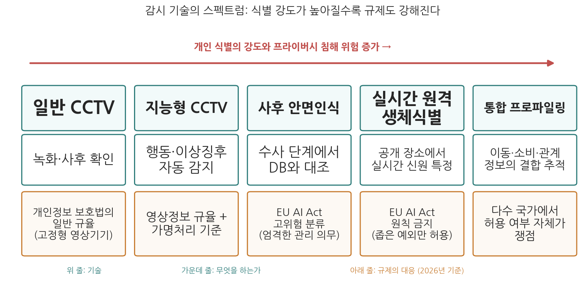
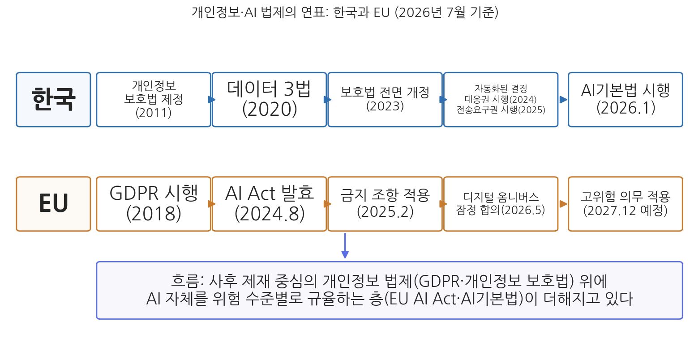

7주차 2차시. AI와 프라이버시 (2): 감시와 법제
가시성은 함정이다. (미셸 푸코, 『감시와 처벌』, 1975)
이 장에서 배우는 것
2020년 1월, 미국 디트로이트의 로버트 윌리엄스(Robert Williams)는 퇴근길 자기 집 앞마당에서 아내와 두 딸이 보는 가운데 체포되었다. 시계 매장 절도 사건의 용의자라는 것이었다. 경찰이 내민 증거는 매장 CCTV의 흐릿한 정지 화면 한 장. 안면인식 시스템이 그 화면을 윌리엄스의 오래된 운전면허 사진과 "일치"한다고 판정했고, 경찰은 그것을 사실상 유일한 단서로 삼아 영장을 받았다. 30시간 구금 끝에 그는 풀려났다. 범인이 아니었기 때문이다. 미국시민자유연맹(ACLU)이 소송을 제기했고, 디트로이트시는 2024년 6월 배상과 함께 안면인식 일치 결과만으로는 체포하지 않는다는 수사 규정 개혁에 합의했다. 안면인식 오인으로 인한 부당 체포가 공식 확인된 초기 사례들 가운데 하나이며, 피해자는 대부분 윌리엄스처럼 흑인이었다.
1차시가 데이터를 "모으는" 단계의 문제를 다루었다면, 이번 차시는 모인 데이터로 사람을 "지켜보는" 문제, 곧 감시를 다룬다. 감시는 국가의 오래된 기능이지만, AI는 감시의 단가를 떨어뜨리고 규모와 정밀도를 끌어올려 감시의 성격 자체를 바꾸고 있다. 이 장에서는 안면인식을 중심으로 감시 기술의 지형을 그리고, 국가 감시를 둘러싼 쟁점을 따진 뒤, 이를 규율하는 법제의 전체 지도(한국 개인정보 보호법, GDPR, EU AI Act, AI기본법)를 2026년 기준으로 정리한다. 마지막으로 법 이후의 과제, 곧 프라이버시를 시스템 설계 단계에 심는 방법을 살펴 9주차(AI 영향평가)로 다리를 놓는다. 구체적으로 다음을 배운다.
- 감시 기술의 스펙트럼과 안면인식의 특별함: 왜 이 기술이 논쟁의 중심인가
- 국내외 안면인식 도입, 중단, 재개의 실제 사례들 (2026년 기준)
- 국가 감시의 쟁점: 안전과 자유, 위축 효과, 감시의 불평등, 기능 확장
- 개인정보 보호 법제의 지형: 개인정보 보호법의 최신 개정, GDPR, EU AI Act, AI기본법
- AI 시대의 프라이버시 보호 설계: 설계에 의한 프라이버시, 프라이버시 강화 기술, 영향평가
이 장은 하나의 질문을 따라 전개된다. "AI가 감시의 비용을 극적으로 낮춘 시대에, 법과 제도는 국가의 시선을 어떻게 통제할 수 있는가?"
2.1 감시 기술의 스펙트럼을 그리고 안면인식의 도입·중단·재개 사례를 읽는다 → 2.2 국가 감시의 쟁점(안전과 자유, 위축 효과, 불평등, 기능 확장)을 따진다 → 2.3 이를 규율하는 법제의 지도를 2026년 기준으로 정리한다 → 2.4 법 조문 너머의 과제, 프라이버시를 설계에 심는 방법을 보고 9주차를 예고한다.
2.1 감시 기술과 안면인식
판옵티콘에서 알고리즘 감시로
감시(surveillance) 이론의 출발점은 제러미 벤담이 1791년에 설계한 원형 감옥 판옵티콘(Panopticon)이다. 3주차에서 정부 목적의 계산 가능성을 주장한 공리주의자로 만났던 그 벤담이다. 중앙 감시탑에서는 모든 감방이 보이지만 수감자는 감시자가 자신을 보고 있는지 알 수 없다. 미셸 푸코(Michel Foucault)는 『감시와 처벌』(1975)에서 이 설계의 핵심을 간파했다. 늘 보일 수 있다는 사실만으로 수감자는 스스로를 규율하게 되므로, 감시자가 실제로 보고 있을 필요조차 없다는 것이다. "가시성은 함정이다"라는 이 장 첫머리의 문장이 그 뜻이다. 감시의 힘은 처벌이 아니라, 지켜보일 가능성이 사람들의 행동을 미리 바꾸는 데 있다.
20세기의 감시 연구는 이 통찰을 국가 너머로 확장했다. 데이비드 라이언(David Lyon)은 감시가 감옥이나 정보기관의 특수 활동이 아니라 신용카드, 통신, 보험을 통해 일상에 스며든 "감시 사회"의 구조임을 보였고(Lyon 2001), 쇼샤나 주보프(Shoshana Zuboff)는 『감시 자본주의 시대』(2019)에서 이용자의 행동 데이터를 수집·예측·판매하는 것이 거대 플랫폼 기업의 사업 모델 자체가 되었다고 진단했다. 오늘의 감시는 국가와 기업의 합작이다. 국가는 기업이 모은 데이터를 조회하고, 기업은 국가에 감시 기술을 판매한다. 1차시에서 본 클리어뷰 사건이 정확히 그 접점에 있는데, 곧 자세히 본다.
AI가 이 지형에 더한 것은 규모와 자동화다. 사람이 모니터를 지켜봐야 했던 시대의 감시는 비용 때문에 선별적일 수밖에 없었다. 이제 알고리즘이 수만 대의 카메라를 동시에, 지치지 않고, 얼굴 단위로 지켜볼 수 있다. 감시의 병목이 사라진 것이다.

그림 7-2를 읽는 법은 이렇다. 왼쪽에서 오른쪽으로 갈수록 개인 식별의 강도가 높아지는 감시 기술들을 배열했다. 위 줄이 기술, 가운데 줄이 그 기술이 하는 일, 아래 줄이 2026년 기준 규제의 대응이다. 이 그림에서 알 수 있는 것은 두 가지다. 첫째, "CCTV"라고 뭉뚱그려 부르는 것들 사이에 질적 차이가 있다는 점이다. 녹화만 하는 카메라와 지나가는 모든 행인의 신원을 실시간으로 특정하는 시스템은 같은 물건이 아니다. 둘째, 규제가 이 눈금을 따라 차등적으로 설계되고 있다는 점이다. 오른쪽 끝으로 갈수록 "관리하며 허용"에서 "원칙 금지"로, 나아가 허용 여부 자체가 정치적 쟁점이 되는 영역으로 넘어간다.
안면인식은 무엇이 특별한가
스펙트럼의 오른쪽을 차지하는 안면인식(facial recognition)이 유독 격렬한 논쟁을 부르는 이유는 세 가지다. 첫째, 원격·비접촉 식별이다. 지문이나 DNA와 달리 얼굴은 본인이 알지 못하는 사이에, 동의 절차 없이, 멀리서 채취된다. 둘째, 얼굴은 바꿀 수 없는 식별자이면서 공개된 식별자다. 유출된 비밀번호는 바꾸면 되지만 유출된 얼굴은 바꿀 수 없고, 우리는 얼굴을 가리지 않고 살아간다. 셋째, 오류가 불평등하게 분포한다. 부올람위니와 게브루의 연구는 상용 얼굴 분석 시스템의 오류율이 피부색이 밝은 남성에게서는 1% 미만인 반면 피부색이 어두운 여성에게서는 최대 35% 수준까지 치솟음을 보였고(Buolamwini and Gebru 2018), 미국 국립표준기술연구소(NIST)의 대규모 평가도 인구집단별 오인식률 격차를 확인했다(NIST 2019). 5주차에서 본 알고리즘 편향이 여기서는 체포라는 물리력과 직결된다. 윌리엄스 사건이 그 증거다.
그래서 안면인식의 지난 몇 년은 도입과 중단, 재개가 교차하는 진자 운동의 역사였다. 사례를 읽어 보자.
미국 기업 클리어뷰 AI(Clearview AI)는 소셜미디어 등 웹에 공개된 얼굴 사진 수십억 장을 동의 없이 긁어모아 안면인식 검색 서비스를 만들고, 이를 각국 수사기관에 판매했다. 2020년 『뉴욕타임스』 보도로 실체가 드러나자 각국 감독기구가 움직였다. 프랑스, 이탈리아, 그리스 감독기구가 각각 2,000만 유로의 과징금을 부과했고, 네덜란드는 2024년 3,050만 유로를 부과했으며, 영국 정보위원회(ICO)는 2022년 750만 파운드의 과징금과 영국인 데이터 삭제를 명령했다. 미국에서는 일리노이주 생체정보보호법(BIPA) 소송의 2022년 합의로 민간 기업에 대한 데이터베이스 판매가 금지되었다. 클리어뷰는 영국에서 "외국 수사기관에만 서비스하므로 영국 법의 적용 대상이 아니다"라고 다투어 1심 격인 1차 심판소에서 이겼으나, 2025년 10월 상급심판소(Upper Tribunal)는 이 판단을 뒤집고 영국 GDPR이 적용된다고 판결했다(ICO 보도자료, 2025. 10.). 한편 EU AI Act는 인터넷이나 CCTV 영상에서 얼굴 이미지를 무차별 수집해 안면인식 데이터베이스를 구축하는 행위 자체를 금지 목록에 올렸다(2025년 2월 적용). 사실상 클리어뷰 방식의 사업을 겨냥한 조항이다.
이 사례가 보여 주는 것은 1차시의 논점이 감시로 이어지는 회로다. "공개된 정보니까 써도 된다"는 논리로 수집된 데이터가, 국가의 수사 도구로 되팔린다. 개별 사진의 공개와 30억 장 데이터베이스의 존재는 전혀 다른 문제라는 것, 그리고 국경 없는 데이터 수집을 한 나라의 법으로 붙잡는 일이 얼마나 어려운지(영국 소송이 관할권 다툼으로 5년을 끈 것)도 함께 보여 준다.
샌프란시스코는 2019년 5월 미국 대도시 최초로 시 기관(경찰 포함)의 안면인식 사용을 조례로 금지했고, 보스턴, 포틀랜드 등이 뒤따랐다. 뉴올리언스도 2020년 12월 안면인식과 예측 치안 도구를 금지하는 조례를 만장일치로 통과시켰다. 그러나 진자는 되돌아왔다. 강력범죄 급증을 이유로 뉴올리언스 시의회는 2022년 7월 살인 등 강력범죄 수사에 한해 안면인식을 다시 허용했고, 2025년에는 교도소 집단 탈옥 사건을 계기로 시장과 경찰이 제한 완화를 공식 추진했다. 그 사이 경찰이 민간 카메라 네트워크를 통해 조례상 제한을 우회하여 실시간 안면인식 알림을 받아 온 사실도 지역 언론 보도로 드러났다(2025). 2026년 현재 미국의 안면인식 규율은 연방 차원의 법 없이 주·시 단위 규제가 도입과 철회를 반복하는 조각보 상태다.
이 사례가 보여 주는 것은 두 가지다. 첫째, 안면인식 규제는 한 번 정하면 끝나는 문제가 아니라 치안 여론에 따라 요동치는 정치적 균형이라는 점이다. 흉악 사건 하나가 몇 년의 규제 논의를 되감을 수 있다. 둘째, 공식 규제와 실제 관행 사이의 간극이다. 금지 조례가 있어도 민간 네트워크를 경유하면 우회가 가능했다. 규칙의 존재와 규칙의 작동은 다른 문제이며, 이는 4주차에서 본 책임성 확보 장치(감사, 공개)가 감시 영역에서도 필요함을 뜻한다.
법무부는 과학기술정보통신부와 협약을 맺고 2019년부터 출입국 심사 고도화를 위한 "AI 식별추적 시스템" 개발 사업을 추진하면서, 출입국 과정에서 수집된 내국인 5,760만 건과 외국인 1억 2천만 건의 얼굴 사진 등 개인정보를 민간 참여 기업의 알고리즘 학습에 쓰도록 했다. 2021년 언론 보도로 알려지자 "국가가 여권 심사용으로 받은 얼굴을 AI 개발사에 넘겼다"는 비판이 일었고, 시민단체들은 헌법소원을 제기했다. 개인정보보호위원회는 2022년 4월, 얼굴 정보는 민감정보에 해당하지만 출입국관리라는 당초 수집 목적의 범위 안에서 처리 위탁된 것이어서 위법하지 않다고 판단하고, 위탁 사실과 수탁자를 홈페이지에 공개하지 않은 점에 대해서만 과태료 100만 원을 부과했다. 시민사회는 1억 7천만 건의 민감정보 활용에 과태료 100만 원이라는 결론이 "면죄부"라고 반발했다(개인정보보호위원회 의결, 2022. 4. 27.; 관련 보도 종합).
이 사례가 보여 주는 것은 공공부문 특유의 문제, 곧 기능 확장(function creep)이다. 출입국 심사를 위해 의무적으로 제출한 얼굴이 AI 개발이라는 다른 기능에 재사용되었고, 법 해석상 "목적 범위 내"라는 판단이 가능했다. 시민이 국가에 정보를 줄 때는 선택지가 없었다는 점(1차시에서 본, 탈퇴할 수 없는 처리자로서의 국가)을 상기하면, 민간보다 공공의 재사용에 더 엄격한 잣대가 필요하다는 주장이 왜 나오는지 이해할 수 있다. 같은 얼굴 기술이라도 설계에 따라 평가가 갈린다는 점도 함께 보아 두자. 인천공항의 "스마트패스"는 승객이 스스로 앱에서 여권과 얼굴을 등록하면 출국장과 탑승구를 얼굴 인식으로 통과하는 서비스로 2023년 7월 도입되어 2025년 전면 확대되었는데, 자발적 등록, 명시된 단일 목적, 유효기간 설정이라는 점에서 위 사업과 구조가 다르다. 문제는 얼굴 기술 자체가 아니라 동의, 목적, 통제의 설계다.
영국에서도 비슷한 교훈이 나왔다. 사우스웨일스 경찰의 실시간 안면인식 시범 운영에 대해 영국 항소법원은 2020년, 누구를 감시 목록에 올리고 어디에 배치할지에 대한 법적 기준이 없고 차별 위험 검토가 부족했다는 이유로 위법하다고 판결했다(Bridges v South Wales Police). 스웨덴 감독기구는 2019년 학교가 학생 출석 확인에 안면인식을 시험한 데 대해 "덜 침해적인 수단이 있다"며 과징금을 부과했다. 목적에 비해 수단이 과도하면 안 된다는 비례성 원칙이 감시 기술 심사의 공통 잣대로 자리 잡는 흐름이다.
2.2 국가 감시의 쟁점
안전과 자유라는 프레임, 그리고 그 너머
감시 논쟁은 흔히 "안전이냐 자유냐"의 저울로 표현된다. 실종 아동을 찾고 테러를 막는 데 안면인식만큼 효과적인 도구가 없다는 주장과, 모두를 잠재적 용의자로 스캔하는 사회는 자유 사회가 아니라는 반론이다. 이 프레임은 출발점으로는 유용하지만 두 가지를 놓친다.
첫째, 저울의 양쪽이 같은 사람들에게 배분되지 않는다. 감시의 편익(치안)은 널리 퍼지지만 감시의 비용(오인, 사찰, 위축)은 특정 집단에 집중된다. 윌리엄스 사건이 보여 주듯 오인식률은 인구집단별로 다르고, 감시 카메라와 불심검문은 애초에 특정 지역과 계층에 밀집 배치되는 경향이 있다. 버지니아 유뱅크스(Virginia Eubanks)는 『자동화된 불평등(Automating Inequality)』(2018)에서 복지 수급자들이 중산층은 겪지 않는 수준의 데이터 감시(수급 자격 검증, 이상 거래 탐지)를 일상적으로 받는 현실을 보였다. 감시는 프라이버시 문제인 동시에 5주차에서 본 형평성 문제다.
둘째, 감시의 해악은 적발이나 처벌 이전에, 지켜보일 가능성 그 자체에서 발생한다. 이것이 위축 효과(chilling effect)다. 판옵티콘의 논리 그대로, 감시받을 수 있다고 느끼는 사람은 검색어를 바꾸고, 집회 참석을 망설이고, 정부 비판을 삼간다. 이는 추측이 아니라 측정된 현상이다. 2013년 에드워드 스노든(Edward Snowden)이 미국 국가안보국(NSA)의 대량 감시 프로그램을 폭로한 뒤, 위키피디아에서 테러 관련 민감 주제 문서들의 조회수가 유의미하게 감소했다는 연구가 대표적이다(Penney 2016). 감시는 아무도 체포하지 않고도 표현의 자유와 알 권리를 갉아먹으며, 그렇게 위축된 시민은 6주차에서 본 민주적 공론장을 지탱할 수 없다. 프라이버시가 민주주의의 기반 설비라는 1차시의 명제가 여기서 실증된다.
국가 감시의 실패 사례: 알고리즘 복지 감시
국가 감시는 치안에 국한되지 않는다. 세금, 복지, 고용 행정에서도 "부정 적발"의 이름으로 데이터 감시가 확산되어 왔다. 그 위험을 보여 준 고전적 사례가 네덜란드에서 나왔다.
네덜란드 정부는 복지·조세 부정을 적발하기 위해 소득, 채무, 급여, 주거 등 정부 부처들에 흩어진 개인 데이터를 결합해 "부정 위험 인물"을 점수화하는 시스템 리스크 인디카치(SyRI, Systeem Risico Indicatie)를 운영했다. 위험 분석은 주로 저소득층 밀집 지역을 대상으로 수행되었고, 어떤 지표로 누가 위험 인물로 지목되는지는 공개되지 않았다. 시민단체와 노동조합이 제기한 소송에서 헤이그 지방법원은 2020년 2월, SyRI가 유럽인권협약 제8조(사생활 존중)를 위반한다고 판결했다. 법원은 부정 적발이라는 목적의 정당성은 인정하면서도, 시스템의 불투명성 때문에 당사자가 자신이 왜 지목되었는지 알 수도 다툴 수도 없고, 빈곤 지역을 겨냥한 운용이 차별과 낙인을 낳을 위험이 있다는 점에서 비례성을 잃었다고 보았다. SyRI는 폐지되었다. 그러나 비슷한 시기 네덜란드 국세청이 아동수당 부정 심사에 사용한 위험 분류 알고리즘이 이중국적자 등을 차별해 수만 가구에 피해를 준 사실이 드러났고(아동수당 스캔들), 이 파문으로 2021년 1월 내각이 총사퇴했다.
이 사례가 보여 주는 것은 감시 문제의 종합판이다. 목적(부정 적발)은 정당했다. 그러나 불투명성(3주차), 책임 공백(4주차), 차별적 부담(5주차), 그리고 프라이버시 침해(이번 주)가 결합하자, 법원은 민주국가가 감수할 수 없는 시스템이라고 판단했다. 특히 법원이 "정부는 신기술을 쓸 때 특별한 책임을 진다"고 밝힌 대목은, AI 감시의 적법성이 기술의 성능이 아니라 투명성과 비례성, 구제 절차라는 제도 설계에 달려 있음을 분명히 했다. 이 판결의 논리는 이후 유럽 각국의 알고리즘 행정 통제에 준거가 되었다.
극단의 참조점으로 중국이 자주 거론된다. 도시 전역의 안면인식 카메라망, 신장 위구르 지역의 집중 감시, 사회신용제도가 그 목록이다. 다만 정확히 볼 필요가 있다.
"중국은 전 국민에게 하나의 점수를 매겨 통제한다"는 서술이 널리 퍼져 있지만, 연구자들의 실증은 다르다. 중국의 사회신용제도는 단일한 전 국민 점수라기보다 법원 판결 불이행자 명단, 기업 신용 기록 등 이질적인 블랙리스트와 시범사업들의 집합이며, 지역별 점수제 실험은 일부에 그쳤다(Creemers 2018). 이 구분이 중요한 이유는 두 가지다. 첫째, 과장된 상(디스토피아적 단일 점수)은 "우리는 저 정도는 아니니 괜찮다"는 안이한 비교를 낳는다. 둘째, 실제 위험은 점수라는 형식이 아니라 데이터 결합과 목록화를 통한 차등 대우 그 자체인데, 이는 정도의 차이일 뿐 어느 나라 행정에서든 나타날 수 있다. SyRI가 바로 민주국가 버전의 사례였다.
이 쟁점들을 관통하는 마지막 개념이 기능 확장이다. 감시 인프라는 일단 구축되면 애초 목적을 넘어 쓰이려는 관성을 갖는다. 코로나19 방역을 위해 만들어진 동선 추적과 QR 출입 기록이 방역 이후에도 활용될 수 있는가를 두고 각국이 겪은 논쟁이 가까운 예다. 한국도 확진자 동선 공개가 사생활 노출 논란을 낳자 공개 범위를 개인 식별이 어려운 방식으로 좁혀 간 경험이 있다. 감시 장치의 도입 심사에서 "지금의 목적"만이 아니라 "장치가 남긴 뒤의 미래"까지 물어야 하는 이유이며, 이것이 법제 설계의 문제로 이어진다.
2.3 개인정보보호 법제: 2026년의 지도
한국: 개인정보 보호법의 진화와 AI기본법의 등장
한국의 규율 축은 개인정보 보호법이다. 2011년 제정, 2020년 데이터 3법 개정(가명정보 도입), 2023년 3월 전면 개정으로 이어져 온 궤적은 1차시에서 보았다. AI 감시와 관련해 특히 중요한 최신 장치는 세 가지다. 첫째, 완전히 자동화된 결정에 대한 정보주체의 권리(제37조의2)가 2024년 3월부터 시행되었다. 사람의 개입 없이 이루어진 자동화된 결정이 자신의 권리나 의무에 중대한 영향을 미치면, 정보주체는 그 결정을 거부하거나 설명을 요구할 수 있고, 처리자는 결정의 기준과 절차를 미리 공개해야 한다. 유럽 밖에서는 드문, GDPR 제22조에 상응하는 장치다. 둘째, 공공기관에 대한 보호수준 평가가 도입되었다. 과거의 관리수준 진단은 법적 근거가 약해 결과 환류가 어려웠으나, 이제 개선 권고와 조치 결과 요구, 미흡 기관에 대한 실태 점검과 과태료 부과가 가능해졌다. 국가가 최대 처리자인 만큼 국가부터 평가받게 한 것이다. 셋째, 이동형 영상정보처리기기(드론, 자율주행차 등) 규율과 국외이전 중지명령권 등 2023년 개정의 나머지 축들이다.
여기에 2026년 1월 22일, 「인공지능 발전과 신뢰 기반 조성 등에 관한 기본법」, 곧 AI기본법이 시행되었다. EU에 이은 세계 두 번째의 포괄적 AI 법제로, 사람의 생명·안전·기본권에 중대한 영향을 미치는 "고영향 AI"에 투명성과 위험관리 의무를 지운다(자세한 구조는 11주차에서 다룬다). 과학기술정보통신부는 시행 초기 과태료 부과에 계도기간을 운영하기로 했다. 주의할 점은 역할 분담이다. AI기본법은 AI 시스템 일반을 규율하는 층이고, 개인정보 처리의 적법성은 여전히 개인정보 보호법과 개인정보보호위원회의 소관이다. 안면인식처럼 두 층에 걸치는 기술은 양쪽의 규율을 동시에 받게 된다.
EU: GDPR 위에 쌓인 AI Act
EU의 규율은 두 겹이다. 아래층인 GDPR(2018년 시행)은 개인정보 처리 일반을 규율한다. 처리에는 적법 근거가 있어야 하고, 정보주체는 열람, 정정, 삭제(잊힐 권리), 이동, 그리고 자동화된 결정에 대한 이의 제기 권리를 가지며, 위반 시 전 세계 매출의 최대 4%까지 과징금이 가능하다. 메타(Meta)가 2023년 EU-미국 간 데이터 이전 문제로 12억 유로의 과징금을 받은 것과, 1차시에서 본 오픈AI 제재, 위 클리어뷰 제재가 모두 이 층의 집행이다. 역외의 사업자라도 EU 주민을 겨냥하거나 그 행동을 모니터링하면 적용된다는 점(역외 적용)은 클리어뷰 사건의 영국 상급심판소 판결로 다시 확인되었다.
위층인 EU AI Act(인공지능법)는 2024년 8월 발효되어 단계적으로 적용되고 있으며, AI 시스템을 위험 수준별로 규율한다. 감시와 관련된 핵심은 2025년 2월부터 적용된 금지 목록(제5조)이다. 공개된 장소에서 법 집행 목적의 실시간 원격 생체식별은 원칙적으로 금지되고, 납치 피해자 수색이나 임박한 테러 위협 같은 좁은 예외에서만 사전 승인 아래 허용된다. 얼굴 이미지의 무차별 수집을 통한 안면인식 데이터베이스 구축(클리어뷰 방식), 직장과 교육기관에서의 감정 인식, 공공기관의 일반 목적 사회적 평점도 금지되었다. 사후(비실시간) 원격 생체식별은 금지가 아니라 고위험으로 분류되어 엄격한 관리 의무를 받는다. 그림 7-2의 오른쪽 눈금이 바로 이 차등 구조다.
다만 2026년의 EU는 속도 조절 중이다. 산업계의 부담 완화 요구 속에 EU 집행위원회가 2025년 11월 제안한 "디지털 옴니버스" 패키지에 대해 2026년 5월 입법기관 간 잠정 합의가 이루어져, 생체인식, 교육, 고용, 국경 관리 등 고위험 AI(부속서 III)에 대한 의무 적용이 당초 2026년 8월에서 2027년 12월로 16개월 연기되었다. 같은 패키지에는 AI 학습을 위한 개인정보 처리를 "정당한 이익"으로 명문화하는 GDPR 개정안도 담겼는데, 유럽데이터보호이사회(EDPB) 등이 2026년 2월 공동의견으로 안전장치 부족을 지적하는 등 반발이 커서 2026년 7월 현재 최종 문안이 확정되지 않았다. 규제의 세계 표준을 자임해 온 EU조차 혁신 경쟁 압력 앞에서 보호 수준을 재협상하고 있다는 사실 자체가, 11주차에서 다룰 "혁신과 규제의 긴장"의 생생한 표본이다.

그림 7-3을 읽는 법은 이렇다. 위 레인이 한국, 아래 레인이 EU의 주요 법제 이정표이고, 맨 아래 상자가 두 레인을 관통하는 공통 흐름이다. 이 그림에서 알 수 있는 것은 두 가지다. 첫째, 개인정보 법제(GDPR, 개인정보 보호법)라는 기존 층 위에 AI 자체를 위험 수준별로 규율하는 새 층(EU AI Act, AI기본법)이 최근 몇 년 사이 빠르게 쌓였다는 점이다. 둘째, 한국과 EU가 시차를 두고 서로를 참조하며 움직여 왔다는 점이다. 데이터 3법과 전송요구권은 GDPR을, AI기본법은 AI Act를 참조했고, 거꾸로 EU의 시행 연기는 먼저 전면 시행에 들어간 한국의 경험을 국제 비교의 준거로 만들었다.
표 7-1. 세 법제의 비교 (2026년 7월 기준)
| 구분 | 개인정보 보호법 (한국) | GDPR (EU) | EU AI Act (EU) |
|---|---|---|---|
| 규율 대상 | 개인정보의 처리 | 개인정보의 처리 | AI 시스템 자체 |
| 접근 방식 | 원칙 + 분야별 안내서, 사전적정성 검토 | 원칙 + 적법 근거, 사후 집행 | 위험 4단계 차등 규율 |
| 감시 관련 핵심 | 자동화된 결정 대응권(2024), 이동형 영상기기 규율, 보호수준 평가 | 자동화된 결정 이의권(제22조), 역외 적용, DPIA | 실시간 원격 생체식별 원칙 금지, 얼굴 DB 구축 금지(2025.2 적용) |
| 집행·제재 | 과징금 중심 전환, 개인정보보호위원회 | 매출 최대 4% 과징금, 각국 감독기구 | 매출 최대 7% 과징금, 고위험 의무는 2027.12로 연기 |
남는 질문: 법은 충분한가
법제의 지도를 그려 놓고 보면 두 개의 구멍이 보인다. 하나는 공백의 구멍이다. 예컨대 한국에는 수사기관의 안면인식 사용 요건을 직접 정한 법률이 없어, 일반 개인정보 법리와 내부 지침으로 규율되는 상태다. 법무부 사례에서 보았듯 "목적 범위 내"라는 해석의 신축성이 크고, 미국처럼 조례로 금지한 도시도, EU처럼 원칙 금지를 명문화한 규정도 없다. 다른 하나는 집행의 구멍이다. 클리어뷰의 유럽 과징금 상당액은 미국 기업인 클리어뷰가 버티는 동안 집행되지 못했고, 뉴올리언스에서는 조례가 있어도 관행이 우회했다. 법 조문과 보호 사이의 이 간극을 메우는 것이 마지막 절의 주제, 곧 설계다.
2.4 AI 시대의 프라이버시 보호 설계
사후 구제에서 사전 설계로
지금까지 본 법제는 대체로 사후적이다. 침해가 일어나면 조사하고, 과징금을 물리고, 판결로 시스템을 세운다. 그러나 모델에 흡수된 정보는 지우기 어렵고(그림 7-1의 네 번째 균열), 위축 효과는 배상으로 회복되지 않는다. 그래서 규율의 무게중심은 시스템이 만들어지기 전으로 이동하고 있다. 캐나다 온타리오주 정보프라이버시위원장이었던 앤 카부키안(Ann Cavoukian)이 1990년대에 정식화한 설계에 의한 프라이버시(privacy by design)가 그 원리다. 프라이버시 보호를 완성된 시스템에 덧붙이는 옵션이 아니라 설계의 기본값(default)으로 삼자는 것으로, GDPR 제25조가 이를 법적 의무로 만들었다.
설계의 도구함도 채워지고 있다. 프라이버시 강화 기술(Privacy Enhancing Technologies, PET)이라 부르는 것들이다. 통계 결과에 수학적으로 계산된 잡음을 섞어 개별 인물의 존재 여부를 알 수 없게 하는 차분 프라이버시(differential privacy)는 미국 인구조사국이 2020년 센서스 결과 공표에 적용했을 만큼 실용화되었다. 데이터를 중앙 서버로 모으는 대신 각자의 기기에서 학습하고 모델 갱신분만 합치는 연합학습(federated learning), 실제 데이터의 통계적 성질을 흉내 낸 가짜 데이터로 학습하는 합성데이터(synthetic data)도 있다. 1차시에서 본 "활용과 보호의 긴장"을 기술로 누그러뜨리는 시도들이지만, 만능은 아니다. 잡음을 섞으면 정확도가 떨어지고, 합성데이터가 원본의 개인정보를 새어 나가게 하는 경우도 보고된다. 기술은 긴장을 관리할 뿐 소거하지 않는다.
절차의 설계: 영향평가라는 관문
설계 원리를 조직의 절차로 만든 것이 영향평가다. 개인정보 영향평가(Privacy Impact Assessment)는 새 시스템이 개인정보에 미칠 영향을 구축 전에 평가하고 위험 완화 방안을 마련하는 절차로, 한국 개인정보 보호법 제33조는 일정 규모 이상의 개인정보파일을 운용하는 공공기관에 이를 의무화하고 있다. GDPR 제35조의 데이터보호 영향평가(DPIA)도 같은 계열이다. 안면인식 같은 고위험 처리는 도입 여부를 결정하기 전에 이 관문을 통과해야 하며, 영국 브리지스 판결이 경찰의 안면인식을 위법하다고 본 근거 중 하나도 부실한 영향평가였다.
신뢰를 위한 제도적 장치들도 이 연장선에 있다. 자동화된 결정의 기준과 절차를 표준화된 용어와 시각화로 미리 공개하는 투명성 확보, 설명 요구와 의견 제출에 응답하는 대응권 보장, 개인정보 처리방침 평가, 전문성을 갖춘 개인정보 보호책임자(CPO) 지정 같은 장치들이다. 흩어져 보이지만 방향은 하나다. 프라이버시 보호를 담당자의 선의나 사후 단속이 아니라, 조직이 반복 수행하는 절차에 심는 것이다.
다만 절차가 요식이 되면 "평가서류 갖춘 감시"만 늘어난다는 경고도 만만치 않다. 평가를 누가 수행하고, 결과가 공개되는지, 부정적 평가가 실제로 도입을 멈출 수 있는지에 따라 영향평가는 안전장치가 되기도, 통과의례가 되기도 한다. 이 도구의 계보와 설계 쟁점, 캐나다 등 해외 제도와 한국의 실무는 9주차(AI 영향평가) 두 차시에서 본격적으로 다룬다. 이번 주에 본 프라이버시의 긴장들은 거기서 "평가 항목"의 형태로 다시 만나게 될 것이다.
요약
감시의 힘은 처벌이 아니라 지켜보일 가능성이 행동을 미리 바꾸는 데 있으며(벤담의 판옵티콘, 푸코 1975), 오늘의 감시는 국가와 기업의 합작으로 일상에 스며들어 있다(Lyon 2001; Zuboff 2019). AI는 감시의 병목을 제거해 규모와 자동화를 가져왔고, 그 중심에 있는 안면인식은 원격·비접촉 식별, 바꿀 수 없는 식별자, 불평등한 오류 분포라는 세 특성 때문에 논쟁의 초점이 되었다. 지난 몇 년은 진자 운동의 역사였다. 클리어뷰 AI는 각국 과징금과 EU AI Act의 금지 조항을 낳았고, 미국 도시들은 금지(샌프란시스코 2019, 뉴올리언스 2020)와 재개(뉴올리언스 2022, 2025)를 오갔으며, 한국에서는 법무부 출입국 얼굴 데이터의 AI 학습 활용이 기능 확장 논쟁을 남겼다. 국가 감시의 쟁점은 "안전 대 자유"를 넘어, 감시 비용의 불평등한 배분(Eubanks 2018), 측정 가능한 위축 효과(Penney 2016), 기능 확장에 있으며, 네덜란드 SyRI 판결(2020)은 목적이 정당해도 불투명하고 차별적인 감시는 민주국가가 감수할 수 없음을 확인했다. 법제는 두 층으로 쌓이고 있다. 개인정보 층에서 한국은 2023년 전면 개정(자동화된 결정 대응권 2024년 시행, 전송요구권 2025년 시행, 보호수준 평가)을, EU는 GDPR 집행(메타, 오픈AI, 클리어뷰)을 진행했고, AI 층에서 EU AI Act의 금지 조항이 2025년 2월 적용된 데 이어 한국 AI기본법이 2026년 1월 시행되었다. 다만 EU는 2026년 5월 디지털 옴니버스 잠정 합의로 고위험 의무 적용을 2027년 12월로 연기하는 등 보호와 혁신 사이에서 재협상 중이다. 법의 공백과 집행의 간극을 메우기 위해 규율의 무게중심은 사전 설계로 이동하고 있다. 설계에 의한 프라이버시, 차분 프라이버시 등 프라이버시 강화 기술, 그리고 공공기관에 의무화된 개인정보 영향평가가 그 도구이며, 영향평가라는 관문의 설계는 9주차의 주제로 이어진다.
토론·복습 문제
7-5. (서술형 연습) "감시의 해악은 처벌이 아니라 지켜보일 가능성 그 자체에서 발생한다"는 명제를 판옵티콘의 논리와 위축 효과 연구(Penney 2016)를 들어 설명하고, 이 명제가 "숨길 것 없는 사람은 감시를 두려워할 필요가 없다"는 통념에 대한 반박이 되는 이유를 논술하시오.
7-6. (찬반 토론) 흉악범죄 수사와 실종자 수색을 위해 한국 경찰이 공공장소 CCTV 영상에 사후 안면인식 검색을 도입해야 하는가. 찬성 측은 도입을 전제로 어떤 안전장치(법적 근거, 승인 절차, 감사)를 설계할지, 반대 측은 브리지스 판결, 윌리엄스 사건, 위축 효과 가운데 어떤 근거가 가장 강력한지 정리하여 토론해 보시오.
7-7. 법무부 출입국 AI 식별추적 사례와 인천공항 스마트패스는 같은 얼굴 인식 기술을 쓰지만 평가가 갈린다. 동의, 목적, 통제의 세 기준으로 두 사례를 비교하고, "문제는 기술이 아니라 설계"라는 이 장의 명제가 타당한지, 아니면 기술 자체를 금지해야 할 임계선이 따로 있는지 자신의 견해를 밝히시오.
7-8. EU는 2026년 디지털 옴니버스 합의로 고위험 AI 의무의 적용을 연기했고, 한국 AI기본법은 2026년 1월 예정대로 전면 시행에 들어갔다. 규제를 먼저 시행하는 나라와 늦추는 나라가 각각 무엇을 얻고 무엇을 잃는지, 2주차(효율성)와 이번 주(프라이버시)의 논의를 연결해 분석해 보시오.